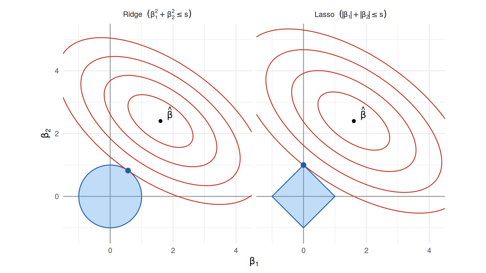
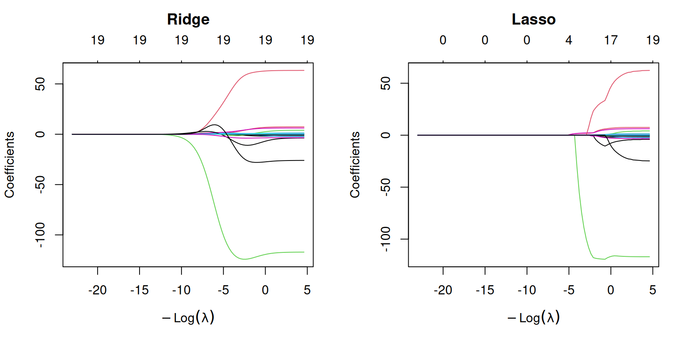
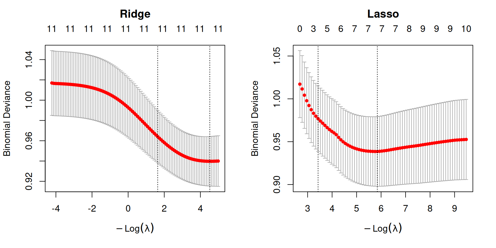

5 Sélection de variables et régularisation
5.1 Sélection de variables : rappel
Les chapitres précédents ont présenté deux familles d’outils de sélection de variables :
les tests pour modèles emboîtés (test \(F\) en régression linéaire, différence de déviances pour les GLM) ;
les critères d’information \(AIC\) et \(BIC\), combinés aux procédures pas à pas forward, backward et stepwise, pour les modèles non emboîtés ou lorsque le nombre de sous-modèles (\(2^p\)) est trop grand pour une recherche exhaustive.
La régression régularisée, présentée ci-dessous, offre une troisième approche qui effectue simultanément l’estimation et (pour le lasso) la sélection de variables.
5.2 Régression régularisée
Considérons le modèle de régression \[Y_i = \beta_0 + \beta_1 X_{i1} + \cdots + \beta_p X_{ip} + \epsilon_i, \qquad \epsilon_i \sim \mathcal{N}(0,\sigma^2).\] L’estimateur des moindres carrés \(\hat\beta\) est sans biais et de variance minimale parmi les estimateurs sans biais. Cependant, rien ne garantit qu’il possède la plus petite erreur quadratique moyenne : \[E\left[(\beta_j - \hat\beta_j)^2\right] = \mbox{biais}(\hat\beta_j)^2 + Var(\hat\beta_j).\]
La régression régularisée impose une pénalité au critère des moindres carrés : on minimise \[l_\lambda(\beta) = l(\beta) + \lambda\, g(\beta_1,\ldots,\beta_p),\] où \(g\) est une fonction de pénalité connue et \(\lambda \geq 0\) est le coefficient de pénalité. La pénalité réduit la variance des estimateurs au prix d’un biais ; avec un choix judicieux de \(g\) et de \(\lambda\), on diminue l’erreur quadratique moyenne et on obtient des prédictions plus précises. C’est le compromis biais-variance.
Remarque
Remarque.
L’ordonnée à l’origine \(\beta_0\) n’est pas pénalisée. Par ailleurs, les variables explicatives sont généralement standardisées avant l’ajustement, car la pénalité n’est pas invariante à l’échelle des variables.
5.2.1 Régression ridge
La régression ridge minimise \[l^{(R)}_\lambda(\beta) = \sum_{i=1}^n\left\{Y_i - (\beta_0 + \beta_1 X_{i1} + \cdots + \beta_p X_{ip})\right\}^2 + \lambda\sum_{j=1}^p\beta_j^2.\] En écriture matricielle, \(l^{(R)}_\lambda(\beta) = (Y - X\beta)^\top(Y-X\beta) + \lambda\,\beta^\top\tilde I_p\,\beta\), où \(\tilde I_p\) est diagonale de taille \(p+1\) avec un 0 en première position (pas de pénalité sur \(\beta_0\)) et des 1 ailleurs. La solution est explicite : \[\boxed{\hat\beta^{(R)}_\lambda = (X^\top X + \lambda\tilde I_p)^{-1}X^\top Y}\] et on en déduit
\[ \begin{aligned} E[\hat\beta^{(R)}_\lambda] &= (X^\top X + \lambda\tilde I_p)^{-1}X^\top X\beta \neq \beta,\\ Var[\hat\beta^{(R)}_\lambda] &= \sigma^2(X^\top X + \lambda\tilde I_p)^{-1}X^\top X(X^\top X + \lambda\tilde I_p)^{-1}. \end{aligned} \]
L’estimateur est donc biaisé, sauf si \(\lambda = 0\). Lorsque \(\lambda = 0\), \(\hat\beta^{(R)}_\lambda = \hat\beta\) ; lorsque \(\lambda\to\infty\), tous les \(\hat\beta^{(R)}_{j,\lambda}\) (\(j\geq1\)) tendent vers 0 et l’ordonnée à l’origine tend vers \(\bar Y\). On parle d’un phénomène de rétrécissement (shrinkage).
Exemple
Exemple (Hitters, librairie ISLR).
La réponse est le salaire d’un joueur de baseball (19 variables explicatives). En R, la régression ridge s’ajuste avec glmnet(x, y, alpha=0). Avec \(\lambda = e^6\), on observe \(\sum_j[\hat\beta^{(R)}_{j,\lambda}]^2 = 5721\) contre \(\sum_j\hat\beta_j^2 = 18469\) pour les moindres carrés : rétrécissement marqué. Sur une partition entraînement/test, le taux d’erreur test passe de \(124\,716\) (moindres carrés) à \(91\,274\) (ridge), soit une diminution de près de 27%.
5.2.2 Régression lasso
La régression lasso minimise \[l^{(L)}_\lambda(\beta) = \sum_{i=1}^n\left\{Y_i - (\beta_0 + \beta_1 X_{i1} + \cdots + \beta_p X_{ip})\right\}^2 + \lambda\sum_{j=1}^p|\beta_j|.\] Il n’existe pas d’expression explicite pour \(\hat\beta^{(L)}_\lambda\), mais des algorithmes d’optimisation efficaces existent (en R : glmnet(x, y, alpha=1)).
La caractéristique clé du lasso : pour les grandes valeurs de \(\lambda\), certains coefficients \(\hat\beta^{(L)}_{j,\lambda}\) deviennent identiquement égaux à 0. Le lasso effectue donc une sélection de variables automatique, intuitive et naturelle. Comme pour ridge : quand \(\lambda\) croît, le biais croît et la variance diminue.
Exemple
Exemple (Hitters, suite).
Avec \(\lambda = e^2\), le lasso annule les coefficients de HmRun, Runs, RBI, CAtBat, CHits, Assists et NewLeagueN : le modèle retenu ne contient plus que 12 variables.
5.2.3 Interprétation géométrique
Propriété — Formulation sous contrainte
Pour chaque \(\lambda \geq 0\), il existe une valeur \(s \geq 0\) (qui dépend des données) telle que l’estimateur ridge est solution de
\[ \min_{\beta}\ \sum_{i=1}^n\left\{Y_i - \left(\beta_0 + \sum_{j=1}^p\beta_j X_{ij}\right)\right\}^2 \quad \text{sous la contrainte} \quad \sum_{j=1}^p\beta_j^2 \leq s, \]
et l’estimateur lasso est solution du même problème sous la contrainte
\[ \sum_{j=1}^p|\beta_j| \leq s. \]
Une grande valeur de \(\lambda\) correspond à une petite valeur de \(s\).
Lorsque les variables explicatives sont centrées, la somme des carrés résiduels s’écrit, à une constante près, \((\beta - \hat\beta)^\top X^\top X(\beta - \hat\beta)\) : ses courbes de niveau sont des ellipses centrées en l’estimateur des moindres carrés \(\hat\beta\). Avec \(p = 2\), on peut donc représenter le problème dans le plan \((\beta_1, \beta_2)\) (Figure 5.1). La région admissible est un disque pour ridge et un losange pour le lasso, et la solution est le point où l’ellipse de plus petit niveau touche la région admissible.
Le losange possède des coins situés sur les axes. Lorsque le contact se fait en un coin, l’un des coefficients est exactement nul. Le disque n’a pas de coin : le contact se fait presque toujours hors des axes, si bien que ridge rétrécit les coefficients sans jamais les annuler. En dimension \(p\), la région du lasso est un polyèdre dont les sommets et les arêtes se trouvent sur des sous-espaces de coordonnées, ce qui explique que plusieurs coefficients puissent être annulés simultanément.
5.2.4 Trajectoires des coefficients
Une autre représentation classique consiste à tracer les estimations \(\hat\beta_{j,\lambda}\) en fonction de \(\log\lambda\) (Figure 5.2). Pour ridge, toutes les trajectoires tendent doucement vers 0 sans jamais l’atteindre : l’axe du haut, qui indique le nombre de coefficients non nuls, reste à 19. Pour le lasso, les trajectoires atteignent 0 l’une après l’autre à mesure que \(\lambda\) augmente, et le nombre de variables retenues diminue.
library(ISLR)
library(glmnet)
Hitters <- na.omit(Hitters)
x <- model.matrix(Salary ~ ., Hitters)[, -1]
y <- Hitters$Salary
grille.lambda <- 10^seq(10, -2, length.out = 100)
reg.ridge <- glmnet(x, y, alpha = 0, lambda = grille.lambda)
reg.lasso <- glmnet(x, y, alpha = 1, lambda = grille.lambda)
par(mfrow = c(1, 2))
plot(reg.ridge, xvar = "lambda")
title("Ridge", line = 2.5)
plot(reg.lasso, xvar = "lambda")
title("Lasso", line = 2.5)
Hitters. Chaque courbe correspond à une variable explicative ; l’axe du haut donne le nombre de coefficients non nuls.
5.2.5 Sélection du paramètre \(\lambda\)
La méthode la plus intuitive est basée sur le taux d’erreur test, estimé par validation croisée pour une grille de valeurs de \(\lambda\) ; on choisit la valeur qui minimise le taux d’erreur test. En R, avec les objets x, y et grille.lambda définis plus haut :
reg.ridge.select <- cv.glmnet(x, y, alpha = 0, lambda = grille.lambda)
reg.ridge.select$lambda.min[1] 8.111308Sur les données Hitters, on obtient \(\lambda = e^{2.2}\) pour ridge et \(\lambda = e^3\) pour le lasso.
5.3 Régularisation en régression logistique
Les idées précédentes s’étendent directement aux GLM. En régression logistique, la régularisation est utile pour deux raisons. D’abord, comme en régression linéaire, elle réduit la variance des estimateurs lorsque le nombre de variables explicatives est grand par rapport à l’information disponible (en régression logistique, c’est surtout le nombre d’événements du groupe le plus rare qui compte). Ensuite, elle règle le problème de la séparation : alors que l’estimateur du maximum de vraisemblance n’existe pas en présence de séparation, l’estimateur régularisé existe toujours.
5.3.1 Log-vraisemblance pénalisée
Le critère des moindres carrés est remplacé par moins deux fois la log-vraisemblance. On minimise
\[ l_\lambda(\boldsymbol\beta) = -2\,\ell(\boldsymbol\beta;\boldsymbol y) + \lambda\, g(\beta_1,\ldots,\beta_p), \]
avec \(g(\beta_1,\ldots,\beta_p) = \sum_{j=1}^p\beta_j^2\) pour ridge et \(g(\beta_1,\ldots,\beta_p) = \sum_{j=1}^p|\beta_j|\) pour le lasso. Comme la déviance vaut \(D(\boldsymbol\beta) = 2\{\ell_{\text{sat}} - \ell(\boldsymbol\beta)\}\), où \(\ell_{\text{sat}}\) ne dépend pas de \(\boldsymbol\beta\), cela revient à minimiser la déviance pénalisée \(D(\boldsymbol\beta) + \lambda\, g(\beta_1,\ldots,\beta_p)\).
Remarque
Remarque.
En régression linéaire normale, \(-2\,\ell(\boldsymbol\beta) = \sigma^{-2}\sum_{i=1}^n(Y_i - \boldsymbol x_i^\top\boldsymbol\beta)^2 + \text{constante}\). Le critère ci-dessus généralise donc exactement celui de la section précédente, la constante \(\sigma^2\) étant absorbée dans \(\lambda\).
Le cas du lien logit — Log-vraisemblance pénalisée
Avec le lien logit et \(\eta_i = \beta_0 + \beta_1X_{i1} + \cdots + \beta_pX_{ip}\), on minimise
\[ l_\lambda(\boldsymbol\beta) = -2\sum_{i=1}^n\left\{y_i\,\eta_i - m_i\log\left(1 + e^{\eta_i}\right)\right\} + \lambda\, g(\beta_1,\ldots,\beta_p), \]
où le terme \(\log\binom{m_i}{y_i}\), qui ne dépend pas de \(\boldsymbol\beta\), a été omis. Pour des données individuelles, \(m_i = 1\).
5.3.2 Estimation
Contrairement au cas linéaire, l’estimateur ridge n’a pas de forme explicite. L’algorithme IRLS s’adapte toutefois directement.
Propriété — IRLS pénalisé (ridge)
Soit \(\boldsymbol\beta^{(t)}\) l’estimation courante, \(\pi_i^{(t)}\) les probabilités correspondantes, \(\boldsymbol W^{(t)} = \text{diag}\left\{m_i\pi_i^{(t)}(1-\pi_i^{(t)})\right\}\) et \(\boldsymbol z^{(t)} = \boldsymbol X\boldsymbol\beta^{(t)} + (\boldsymbol W^{(t)})^{-1}(\boldsymbol y - \boldsymbol\mu^{(t)})\) la réponse de travail. Une itération de Newton-Raphson appliquée à \(l^{(R)}_\lambda\) donne
\[ \boldsymbol\beta^{(t+1)} = \left(\boldsymbol X^\top\boldsymbol W^{(t)}\boldsymbol X + \lambda\tilde I_p\right)^{-1}\boldsymbol X^\top\boldsymbol W^{(t)}\boldsymbol z^{(t)}. \]
C’est la formule de l’estimateur ridge linéaire, appliquée à la réponse de travail \(\boldsymbol z^{(t)}\) avec les poids \(\boldsymbol W^{(t)}\).
Pour le lasso, la pénalité n’est pas dérivable en 0 et l’itération de Newton ne s’applique pas telle quelle. La fonction glmnet remplace, à chaque itération, \(-2\,\ell\) par son approximation quadratique (la même somme de carrés pondérés que dans IRLS), puis minimise le problème lasso pondéré qui en résulte par descente de coordonnées.
Propriété — Existence sous séparation
Supposons que les réponses ne soient pas toutes égales. Pour tout \(\lambda > 0\), le critère ridge \(l^{(R)}_\lambda\) possède un unique minimum fini, et le critère lasso \(l^{(L)}_\lambda\) possède au moins un minimum fini, même en présence de séparation complète ou quasi-complète.
L’argument est simple : \(-2\,\ell(\boldsymbol\beta) \geq 0\), donc la pénalité empêche \(\beta_1,\ldots,\beta_p\) de tendre vers l’infini, et \(-2\,\ell\) tend vers l’infini lorsque \(|\beta_0|\to\infty\) avec les autres coefficients bornés, puisque les deux valeurs de la réponse sont observées. Pour ridge, la matrice \(\boldsymbol X^\top\boldsymbol W\boldsymbol X + \lambda\tilde I_p\) est de plus définie positive, ce qui assure l’unicité.
Remarque
Remarque (inférence).
Les estimateurs régularisés sont biaisés, et la sélection effectuée par le lasso rend invalides les erreurs types, valeur-p et intervalles de confiance usuels calculés sur le modèle retenu. C’est pourquoi glmnet ne fournit pas d’erreurs types. La régularisation est d’abord un outil de prédiction et de sélection ; l’inférence après sélection demande des méthodes spécifiques qui dépassent le cadre de ce cours.
Remarque
Remarque (échelle de \(\lambda\) dans glmnet).
Pour family = "binomial", glmnet minimise \(-\frac{1}{n}\ell(\boldsymbol\beta) + \lambda\left\{\frac{1-\alpha}{2}\sum_j\beta_j^2 + \alpha\sum_j|\beta_j|\right\}\). Les valeurs de \(\lambda\) rapportées par glmnet ne sont donc pas sur la même échelle que celles du critère \(l_\lambda\) défini plus haut ; seul l’ordre des valeurs compte pour l’interprétation.
5.3.3 Choix de \(\lambda\)
Comme en régression linéaire, \(\lambda\) se choisit par validation croisée, mais avec une fonction de perte adaptée à une réponse binaire : la déviance binomiale (type.measure = "deviance", valeur par défaut), le taux de mauvaise classification ("class") ou l’aire sous la courbe ROC ("auc"). La fonction cv.glmnet retourne deux valeurs :
lambda.min, qui minimise l’erreur de validation croisée ;lambda.1se, la plus grande valeur de \(\lambda\) dont l’erreur est à moins d’une erreur type de ce minimum. Elle donne un modèle plus parcimonieux dont la performance n’est pas significativement moins bonne.
Exemple — Régularisation sur empress
On ajuste le modèle avec toutes les interactions entre la classe, le sexe et le groupe d’âge. Ce modèle est pratiquement saturé, et deux cellules ne comptent aucun survivant : les garçons de deuxième classe (0 sur 11) et les filles de troisième classe (0 sur 48). Il y a donc séparation quasi-complète, et le maximum de vraisemblance diverge. La cellule « première classe, homme, enfant » est vide, d’où un coefficient non estimable (NA).
niveaux.classe <- c("Première", "Deuxième", "Troisième")
empress <- read.csv("Jeux de données/empress_individus.csv")
empress$classe <- factor(empress$classe, levels = niveaux.classe)
empress.agr <- read.csv("Jeux de données/empress_agrege.csv")
empress.agr$classe <- factor(empress.agr$classe, levels = niveaux.classe)
m.sature <- glm(survecu ~ classe * sexe * groupe_age,
data = empress, family = binomial)
round(summary(m.sature)$coefficients, 2) Estimate Std. Error z value Pr(>|z|)
(Intercept) -0.74 0.37 -2.01 0.04
classeDeuxième -1.24 0.47 -2.63 0.01
classeTroisième -1.45 0.45 -3.25 0.00
sexeHomme 0.70 0.46 1.50 0.13
groupe_ageEnfant -0.36 1.21 -0.30 0.77
classeDeuxième:sexeHomme 0.38 0.59 0.65 0.51
classeTroisième:sexeHomme 0.44 0.54 0.81 0.42
classeDeuxième:groupe_ageEnfant 0.09 1.45 0.06 0.95
classeTroisième:groupe_ageEnfant -15.01 571.03 -0.03 0.98
sexeHomme:groupe_ageEnfant 12.46 571.03 0.02 0.98
classeDeuxième:sexeHomme:groupe_ageEnfant -28.86 1322.47 -0.02 0.98Les coefficients associés aux cellules sans survivant sont très grands en valeur absolue, avec des erreurs types démesurées. On ajuste maintenant les versions ridge et lasso, en choisissant \(\lambda\) par validation croisée à 10 plis sur la déviance.
x.emp <- model.matrix(survecu ~ classe * sexe * groupe_age, empress)[, -1]
y.emp <- empress$survecu
set.seed(4300)
cv.ridge.emp <- cv.glmnet(x.emp, y.emp, family = "binomial", alpha = 0)
cv.lasso.emp <- cv.glmnet(x.emp, y.emp, family = "binomial", alpha = 1)
par(mfrow = c(1, 2))
plot(cv.ridge.emp)
title("Ridge", line = 2.5)
plot(cv.lasso.emp)
title("Lasso", line = 2.5)
lambda.min et lambda.1se.
Les coefficients régularisés restent finis :
coefs <- cbind(
MV = coef(m.sature),
Ridge = as.vector(coef(cv.ridge.emp, s = "lambda.min")),
Lasso = as.vector(coef(cv.lasso.emp, s = "lambda.min"))
)
round(coefs, 3) MV Ridge Lasso
(Intercept) -0.738 -1.038 -1.047
classeDeuxième -1.241 -0.779 -0.835
classeTroisième -1.453 -1.028 -1.007
sexeHomme 0.697 0.853 0.977
groupe_ageEnfant -0.361 -0.617 -0.358
classeDeuxième:sexeHomme 0.384 0.054 0.000
classeTroisième:sexeHomme 0.437 0.148 0.000
classeDeuxième:groupe_ageEnfant 0.088 0.048 0.000
classeTroisième:groupe_ageEnfant -15.014 -1.175 -2.171
sexeHomme:groupe_ageEnfant 12.462 -0.606 -0.003
classeDeuxième:sexeHomme:groupe_ageEnfant -28.857 -1.824 -2.274
classeTroisième:sexeHomme:groupe_ageEnfant NA -0.334 0.000On compare enfin les probabilités de survie estimées dans chaque cellule avec les proportions observées.
x.agr <- model.matrix(~ classe * sexe * groupe_age, empress.agr)[, -1]
probas <- data.frame(
empress.agr[, c("classe", "sexe", "groupe_age")],
Observee = empress.agr$survivants / empress.agr$effectif,
MV = predict(m.sature, newdata = empress.agr, type = "response"),
Ridge = as.vector(predict(cv.ridge.emp, newx = x.agr,
s = "lambda.min", type = "response")),
Lasso = as.vector(predict(cv.lasso.emp, newx = x.agr,
s = "lambda.min", type = "response"))
)
knitr::kable(probas, digits = 3, row.names = FALSE)| classe | sexe | groupe_age | Observee | MV | Ridge | Lasso |
|---|---|---|---|---|---|---|
| Première | Homme | Adulte | 0.490 | 0.490 | 0.454 | 0.483 |
| Première | Femme | Adulte | 0.324 | 0.324 | 0.262 | 0.260 |
| Première | Femme | Enfant | 0.250 | 0.250 | 0.160 | 0.197 |
| Deuxième | Homme | Adulte | 0.289 | 0.289 | 0.287 | 0.288 |
| Deuxième | Homme | Enfant | 0.000 | 0.000 | 0.020 | 0.028 |
| Deuxième | Femme | Adulte | 0.121 | 0.121 | 0.140 | 0.132 |
| Deuxième | Femme | Enfant | 0.095 | 0.095 | 0.084 | 0.096 |
| Troisième | Homme | Adulte | 0.258 | 0.258 | 0.256 | 0.254 |
| Troisième | Homme | Enfant | 0.019 | 0.019 | 0.022 | 0.026 |
| Troisième | Femme | Adulte | 0.101 | 0.101 | 0.112 | 0.114 |
| Troisième | Femme | Enfant | 0.000 | 0.000 | 0.021 | 0.010 |
Le maximum de vraisemblance reproduit exactement les proportions observées, y compris les probabilités nulles des deux cellules sans survivant : il prédit qu’aucun passager de ces cellules ne peut survivre, ce qui est peu plausible compte tenu des effectifs. Les estimateurs régularisés rapprochent les probabilités des cellules peu informatives de celles des cellules voisines et donnent des probabilités petites, mais strictement positives.